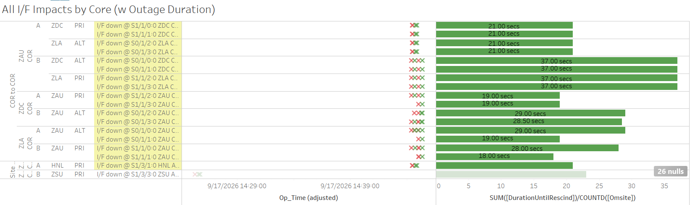

Weekly Highlights 20260916-20260923
SSM-WAAS-065 / DFO-2 Cutover Activities
SSM-WAAS-065 was released on 2/12/26 to upgrade the WAAS subsystems by performing the following hardware changes:
- Remove Legacy PCUs / Replace with new Power Distribution Units (PDUs) and DC Power Supplies (DCPS)
- Remove Legacy KVMs / Replace with new form-fit-function KVM
The DFO-2 Field Test Activities to implement limited operational capability (LOC) of L5 messaging are also being scheduled.
DFO-2 activities will be delayed...
- 9/16 20:10 - SSM-WAAS-065 - HNL WRE-C to Maintenance and Shutdown for upgrade to W7.442L; restored to Normal at 9/17 03:15
- 9/17 19:38 - SSM-WAAS-065 - HNL WRE-B to Maintenance and Shutdown for upgrade to W7.442L; restored to Normal at 9/17 21:15
- 9/18 17:57 - SSM-WAAS-065 - HNL WRE-A to Maintenance and Shutdown for upgrade to W7.442L; restored to Normal at 9/18 20:07
3 WRS sites remain
| Target Cutover Date | Site | Site Type | Outage? (Y/N) |
|---|---|---|---|
| 9/15/2026 | HNL - Honolulu AFSS | WRS2 | N |
| 9/30/2026 | MTP - Tapachula | WRS5 | Y |
| 10/2/2026 | MPR - Puerto Vallarta | WRS5 | Y |
| 10/7/2026 | MSD - San Jose Del Cabo | WRS5 | Y |
- We will not take an outage at some WRS sites to avoid service area impacts.
- Beginning coordination to return legacy items from Canada and Mexico...
- Both O&Ms will receive a final software-only update to W7.442L on 10/8/26 that will remove PCU related code.
- After the O&M Upgrades are complete, we will kick off the 2-week post-mod monitoring period from 10/8-10/22
| Site | Site Type | Upgrade Start | Upgrade Complete |
|---|---|---|---|
| POC - San Diego TRACON | OM | 2/19/2026 18:54 | 2/19/2026 21:28 |
| ZTL - Atlanta ARTCC | WMS / WCN | 2/19/2026 22:05 | 2/20/2026 2:02 |
| ZLA - Los Angeles ARTCC | WMS / WCN | 2/24/2026 16:24 | 2/24/2026 19:56 |
| ZDC - Washington, D.C. ARTCC | WMS / WCN | 2/26/2026 14:04 | 2/26/2026 19:26 |
| ZAU - Chicago ARTCC | WCN | 3/3/2026 14:15 | 3/3/2026 16:22 |
| NOC - Warrenton ATCSCC | OM | 3/3/2026 16:47 | 3/3/2026 19:21 |
| SZ1 - Santa Paula | SGS | 3/4/2026 17:08 | 3/4/2026 20:59 |
| CM1 - South Mountain | SGS | 3/5/2026 16:45 | 3/6/2026 3:04 |
| AP1 - Napa | SGS | 3/10/2026 15:15 | 3/10/2026 18:27 |
| DX1 - Southbury | SGS | 3/12/2026 13:06 | 3/12/2026 18:33 |
| BR1 - Brewster (S97A) | SGS | 3/25/2026 16:03 | 3/25/2026 21:46 |
| BR2 - Brewster (S97B) | SGS | 3/26/2026 15:54 | 3/26/2026 21:09 |
| ZOA - Oakland ARTCC | WRS2 | 3/31/2026 16:31 | 4/2/2026 18:00 |
| ZMA - Miami ARTCC | WRS2 | 4/2/2026 0:17 | 4/2/2026 5:45 |
| ZLA - Los Angeles ARTCC | WRS2 | 4/14/2026 15:39 | 4/14/2026 20:35 |
| ZNY - New York City ARTCC | WRS2 | 4/15/2026 13:20 | 4/15/2026 17:23 |
| ZFW - Fort Worth ARTCC | WRS2 | 4/23/2026 17:52 | 4/23/2026 22:22 |
| ZBW - Boston ARTCC | WRS2 | 4/28/2026 12:56 | 4/28/2026 19:47 |
| ZAB - Albuquerque ARTCC | WRS2 | 4/29/2026 13:55 | 4/29/2026 18:11 |
| ZMP - Minneapolis ARTCC | WRS2 | 5/6/2026 13:39 | 5/6/2026 18:13 |
| ZSU - San Juan CERAP | WRS2 | 5/12/2026 12:59 | 5/14/2026 14:29 |
| ZHU - Houston ARTCC | WRS2 | 5/27/2026 13:45 | 5/27/2026 17:00 |
| ZAN - Anchorage ARTCC | WRS2 | 5/28/2026 16:43 | 5/28/2026 21:02 |
| ZSE - Seattle ARTCC | WRS2 | 6/2/2026 15:26 | 6/2/2026 18:28 |
| ZKC - Kanas City ARTCC | WRS2 | 6/9/2026 14:05 | 6/9/2026 18:43 |
| ZAU - Chicago ARTCC | WRS2 | 6/10/2026 13:31 | 6/10/2026 17:20 |
| ZJX - Jacksonville ARTCC | WRS2 | 6/16/2026 13:47 | 6/16/2026 19:27 |
| ZOB - Cleveland ARTCC | WRS2 | 6/17/2026 13:40 | 6/17/2026 16:25 |
| OTZ - Kotzebue FSS | WRS5 | 6/23/2026 18:43 | 6/23/2026 20:56 |
| JNU - Juneau AFSS | WRS2 | 6/26/2026 17:02 | 6/26/2026 19:26 |
| ZLC - Salt Lake City ARTCC | WRS2 | 6/30/2026 15:45 | 6/30/2026 18:38 |
| ZDC - Washington, D.C. ARTCC | WRS2 | 7/7/2026 13:38 | 7/7/2026 19:06 |
| ZME - Memphis ARTCC | WRS2 | 7/14/2026 15:03 | 7/14/2026 20:51 |
| YQX - Gander | WRS5 | 7/17/2026 12:02 | 7/17/2026 16:22 |
| YYR - Goosebay | WRS5 | 7/21/2026 13:00 | 7/21/2026 16:17 |
| YFB - Iqaluit | WRS5 | 8/5/2026 01:48 | 8/5/2026 07:22 |
| CDB - Cold Bay FSS | WRS2 | 8/11/2026 17:08 | 8/13/2026 21:42 |
| MMX - Mexico City | WRS5 | 8/13/2026 18:23 | 8/13/2026 22:29 |
| MMD - Merida | WRS5 | 8/18/2026 16:08 | 8/18/2026 20:29 |
| BET - Bethel FCT | WRS5 | 8/18/2026 17:47 | 8/19/2026 00:54 |
| ZTL - Atlanta ARTCC | WRS2 | 8/19/2026 15:47 | 8/19/2026 20:31 |
| FAI - Fairbanks AFSS | WRS5 | 8/21/2026 17:18 | 8/21/2026 21:22 |
| BIL - Billings TRACON | WRS5 | 8/25/2026 15:02 | 8/25/2026 21:02 |
| ZDV - Denver ARTCC | WRS5 | 8/26/2026 15:23 | 8/26/2026 20:43 |
| BRW - Barrow FSS | WRS5 | 9/1/2026 18:03 | 9/1/2026 21:36 |
| HNL - Honolulu AFSS | WRS2 | 9/16/2026 20:10 | 9/18/2026 20:07 |
L1/L2 Bias Alarms
- 9/18 03:34 - OTZ L1/L2 Bias Alarm
9/16 - YWG WRE-A Power Work
- 9/16 20:17 - YWG WRE-A to Maintenance and Shutdown
to facilitate power work at site.-- ref LIR 1210265224; restored to Normal at 9/16 20:52
9/17 - BIL WRS Power Work
- 9/17 06:20 - BIL all WREs to Maintenance and
Shutdown for
STARS/ATCT OTS for EIDS/IPVCS/SS3 new circuit installation-- ref LIR 1505438332
9/17 - ZSE Freq Std Replaced
- 9/17 22:02 - ZSE WRE-A Freq Std replaced;
restored to Normal at 9/17
22:46
- ZSE WRE-A - 9/6/26-9/17/26 - Alarms from Freq Std and failing to init -- ref LIR 1206260824
9/18-9/19 - YFB WRS Subframe Reasonability
- 9/18 04:13 - All YFB WREs alarmed with SE 728
Subframe Reasonability for ZTL C&V only
- 9/18 04:54 - YFB WRE-C to Maintenance and Reset to address SE 728; restored to Normal at 9/18 05:14
- 9/19 03:34 - YFB all WREs alarmed with SE 728
Subframe Reasonability for all C&Vs
- 9/19 04:00 - YFB WRE-B to Maintenance and Reset to address Subframe Reasonability; restored to Normal at 9/19 04:20
9/22 - YFB Satcom Antenna Re-Alignment
- 9/22 13:51 - YFB Ring 2 comms down hard;
Satellite Change || SES-2 23C to SES-1 15C; due to a planning/scheduling error, that South Mountain Teleport is unable to complete the HUB side change until 23 Sept 2026 8am EST-- ref LIR 1200555824; line cleared at 9/23 13:00 (~83335 seconds) - 9/23 13:14 - YFB Ring 2 comms down hard to complete satellite change cleanup work; line cleared at 9/23 13:34 (~1238 seconds)
- 9/23 14:24 - YFB Ring 1 comms down hard for satcom re-alignment; line cleared at 9/23 16:50 (~8779 seconds)
9/22 - YWG Power Work
- 9/22 04:49 - YWG WRE-C to Maintenance and Shutdown for power work -- ref LIR 1212755524; restored to Normal at 9/22 07:48
9/22 - DX1 GUS RFU-M&C Comm Fault
- 9/22 12:54 - DX1 GUS alarmed with SE 1 RFU-M&C Comm Fault for ~1 second
9/23 - MTP Power Loss
- 9/23 18:00 - MTP WRE-A power loss; returned to Maintenance at 9/23 18:11 with PCU alarms SE 4 Alarm condition 4 detected and AC9 unexpected state...
Various Comm Impacts
* Only captures major / long-term comm outages
YFB Comms
- 9/16 03:47 - YFB Ring 2 comms flapping until down hard at 9/16 04:00; line came back up to flapping at 9/16 08:31; last event cleared at 9/16 08:45 (~18404 seconds total)
- 9/16 17:12 - YFB Ring 2 comms flapping; last event cleared at 9/16 19:08 (~4239 seconds total)
- 9/17 03:40 - YFB Ring 2 comms flapping until down hard at 9/17 03:49; line came back up to flapping at 9/17 08:33; last event cleared at 9/17 08:43 (~18240 seconds total)
- 9/17 16:56 - YFB Ring 2 comms flapping until down hard at 9/17 17:14; line came back up to flapping at 9/17 18:04; last event cleared at 9/17 19:11 (~9900 seconds total)
- 9/18 03:28 - YFB Ring 2 comms flapping until down hard at 9/18 03:38; line came back up to flapping at 9/18 08:31; last event cleared at 9/18 08:36 (~18103 seconds total)
- 9/18 16:56 - YFB Ring 2 comms flapping until down hard at 9/18 17:25; line came back up to flapping at 9/18 18:35; last event cleared at 9/18 19:16 (~6719 seconds total)
- 9/19 03:21 - YFB Ring 2 comms flapping until down hard at 9/19 03:25; line came back up to flapping at 9/19 08:31; last event cleared at 9/19 08:41 (~18728 seconds total)
- 9/19 16:48 - YFB Ring 2 comms flapping until down hard at 9/19 17:07; line came back up to flapping at 9/19 18:40; last event cleared at 9/19 19:09 (~5050 seconds total)
- 9/20 03:13 - YFB Ring 2 comms flapping until down hard at 9/20 03:19; line came back up to flapping at 9/20 08:29; last event cleared at 9/19 08:38 (~19440 seconds total)
- 9/20 16:21 - YFB Ring 2 comms flapping until down hard at 9/20 16:29; line came back up to flapping at 9/20 18:58; last event cleared at 9/19 19:17 (~5181 seconds total)
- 9/21 03:07 - YFB Ring 2 comms flapping until down hard at 9/21 03:15; line came back up to flapping at 9/21 08:33; last event cleared at 9/20 08:38 (~19430 seconds total)
- 9/21 16:18 - YFB Ring 2 comms flapping until down hard at 9/21 16:28; line came back up to flapping at 9/21 18:24; last event cleared at 9/21 19:16 (~8833 seconds total)
- 9/22 03:00 - YFB Ring 2 comms flapping until down hard at 9/22 03:08; line came back up to flapping at 9/22 08:26; last event cleared at 9/22 08:36 (~19676 seconds total)
YYR Comms
- 9/16 07:13 - YYR Ring 2 comms flapping; last event cleared at 9/16 11:28 (~367 seconds total)
- 9/16 16:42 - YYR Ring 2 comms flapping; last event cleared at 9/16 17:42 (~1788 seconds total)
- 9/16 21:43 - YYR Ring 2 comms flapping; last event cleared at 9/17 07:50 (~6356 seconds total)
- 9/17 12:02 - YYR Ring 2 comms down hard; line cleared at 9/17 14:15 (~7964 seconds)
- 9/20 20:59 - YYR Ring 2 comms flapping with extended downs; last event cleared at 9/20 23:38 (~1013 seconds total)
- 9/22 14:00 - YYR Ring 2 comms down hard; line cleared at 9/22 21:34 (~27824 seconds)
- 9/23 16:56 - YYR Ring 2 comms flapping; last event cleared at 9/23 18:04 (~514 seconds total)
Other Sites
- 9/15 08:35 - BET Ring 1 ALT / Ring 2 PRI comms flapping; last events cleared at 9/16 02:57 (~24489 seconds)
- 9/16 03:06 - CDB Ring 2 comms flapping; last event cleared at 9/16 03:26 (~207 seconds total)
- 9/16 04:19 - CDB Ring 2 comms flapping; last event cleared at 9/16 04:52 (~589 seconds total)
- 9/16 15:13 - OTZ all comms down hard; all lines cleared at 9/16 15:16 (~128 seconds)
- 9/16 16:46 - BRW Ring 1 ALT comms came back up to flapping (~984510 seconds, down since 9/5); line back down hard at 9/16 17:14...
- 9/16 17:51 - BRW Ring 1 ALT comms came back up to flapping...
- 9/16 19:33 - BRW Ring 2 PRI comms came back up to flapping (~1.2 million seconds, down since 9/2); line back down hard at 9/16 19:52...
- 9/17 03:37 - BET Ring 1 ALT / Ring 2 PRI comms down hard; both lines cleared at 9/17 03:40 (~192 seconds)
- 9/17 08:26 - YQX Ring 1 PRI comms down hard; line cleared at 9/17 11:30 (~11032 seconds)
- 9/17 14:44 - All ZAU<->ZLA and ZAU<->ZDC Ring 1 + Ring 2 PRI / ALT comms down hard; all lines cleared 9/17 14:45 (~40 seconds)

- 9/18 03:32 - OTZ all comms down hard; all lines cleared at 9/18 03:34 (~160 seconds)
- 9/18 12:47 - FAI Ring 1 ALT comms restored (~1.8 million seconds; down since 8/28)
- 9/18 12:48 - FAI Ring 2 PRI comms restored (~1.8 million seconds; down since 8/28)
- 9/18 12:50 - BET Ring 1 ALT / Ring 2 PRI comms down hard; both lines cleared at 9/18 12:53 (~168 seconds)
- 9/19 03:35 - YWG Ring 1 ALT / Ring 2 PRI comms down hard; both lines cleared at 9/19 03:40 (~312 seconds)
- 9/19 04:12 - YWG Ring 1 PRI / Ring 2 ALT comms down hard; both lines cleared at 9/19 04:17 (~259 seconds)
- 9/19 04:18 - YWG Ring 1 PRI / Ring 2 ALT comms down hard; both lines cleared at 9/19 05:15 (~3444 seconds)
- 9/20 22:39 - CDB Ring 2 comms down hard; line cleared at 9/20 22:42 (~190 seconds)
- 9/23 10:24 - HNL Ring 1 ALT / Ring 2 PRI comms down hard; both lines cleared at 9/23 14:44 (~15610 seconds)
- 9/23 10:36 - CDB Ring 1 comms down hard; line cleared at 9/23 10:42 (~406 seconds)
8/28-9/18 FAI Ring 1 ALT / Ring 2 PRI Comms
MR-235916A - GCI to perform a circuit migration
/ ISR 0828-1755 - still down after MR-235916A completed by FTI
-- ref LIR
1487528232
- 8/28 15:31 - FAI Ring 1 ALT / Ring 2 PRI comms down hard and loopback events...
- 9/18 12:47 - FAI Ring 1 ALT comms restored (~1.8 million seconds; down since 8/28)
- 9/18 12:48 - FAI Ring 2 PRI comms restored (~1.8 million seconds; down since 8/28)
8/13 BRW Ring 1 ALT / Ring 2 PRI Comms
- 8/13 10:57 - BRW Ring 1 ALT / Ring 2 PRI
comms flapping...
- 8/13 17:49 - BRW Ring 1 ALT comms down hard -- ref LIR 1472365532...
- 8/14 00:32 - BRW Ring 2 PRI comms down hard -- ref LIR 1472364732...
- 9/2 02:08 - BRW Ring 2 PRI comms came back up to flapping (~1.6 million seconds; down since 8/14); down hard again at 9/2 12:49...
- 9/2 03:24 - BRW Ring 1 ALT comms came back up to flapping (~1.6 million seconds; down since 8/13)...
- 9/16 16:46 - BRW Ring 1 ALT comms came back up to flapping (~984510 seconds, down since 9/5); line back down hard at 9/16 17:14...
- 9/16 17:51 - BRW Ring 1 ALT comms came back up to flapping; line back down hard at 9/19 02:06...
- 9/16 19:33 - BRW Ring 2 PRI comms came back up to flapping (~1.2 million seconds, down since 9/2); line back down hard at 9/16 19:52...
5/11/23 Mexico Ring 2 Down Hard...
- 5/11/23 17:01 - MX Ring 2 SatCom upgrade begins; MX Ring 2 OFFLINE until upgrade troubleshooting is complete...
- Targeting network upgrade in CY26
- 3/12/26 Disconnect order
List of current offline WREs
List of current offline WREs -- ref WAAS Status Monitor
All Depot shipments to Mexico are halted until the customs process can be finalized
Currently working to assess MX Inventory to determine equipment refresh and restoration needs...
ZSU
- ZSU WRE-B - 9/8/26-... - Freq Std Ionizer Filament out of tolerance -- ref LAD 1496957832...
MMX -- WRS OFFLINE
- MMX WRE-B - 7/29/26-... - MMX WRE-B to Maintenance to monitor site RFI -- ref LAD 1456891832
- MMX WRE-C - 8/21/26-... - keeping MMX at one thread while investigating RFI -- ref LIR 1189462124...
MMD -- WRS OFFLINE
- MMD WRE-B - 8/18/26-... - Freq Std failed during SSM-WAAS-065 upgrade...
- MMD WRE-C - 10/20/25-... - Good Freq Std swapped into WRE-A to restore -- ref LIR 211505621
MTP -- WRS OFFLINE
- MTP WRE-A - 9/23/25-...
- PCU Failed after power
outage; PCU-B swapped into WRE-A
but DC output is non-functional... ref LAD
1060696524
- Planning to swap PCU-C into WRE-A -- this will remove WRE-C from service, but allow us to restore WRE-A for analysis
- MTP WRE-B - 11/18/24-... - Receiver inits failing due to no DC Power from PCU; PCU swapped with PCU-A after PCU-A failed -- ref LIR 898330924
MPR
- MPR WRE-B - 5/3/24-... - Inits failing -- looks like a bad freq std; due to shipping issues, there is no spare Freq Std and no ETA to recover WRE-B... -- ref LIR 44170821

Major Events


Core I/F Status

Comm Events

Mexico Comm Status